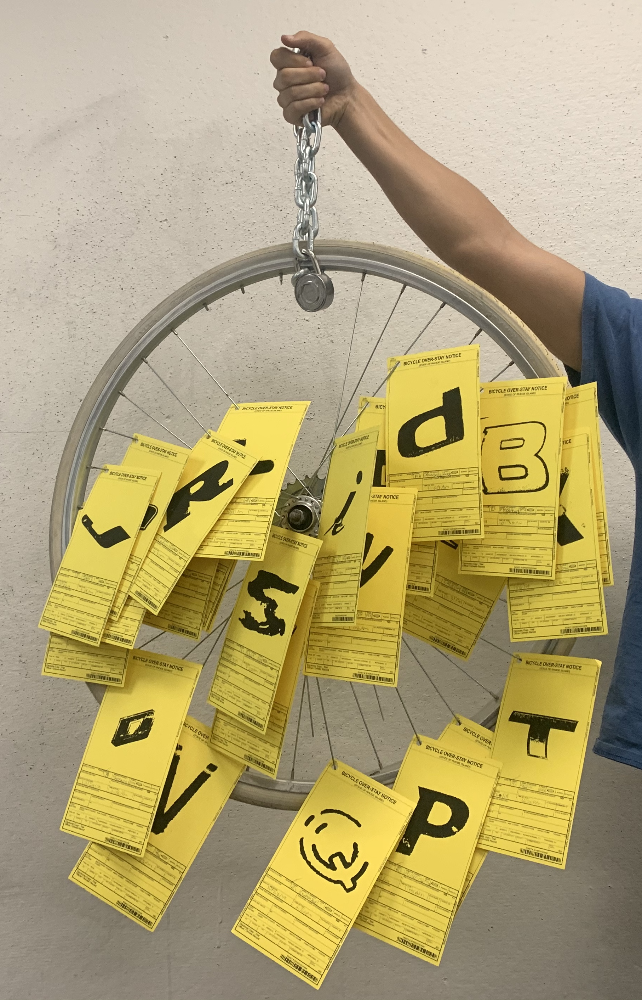
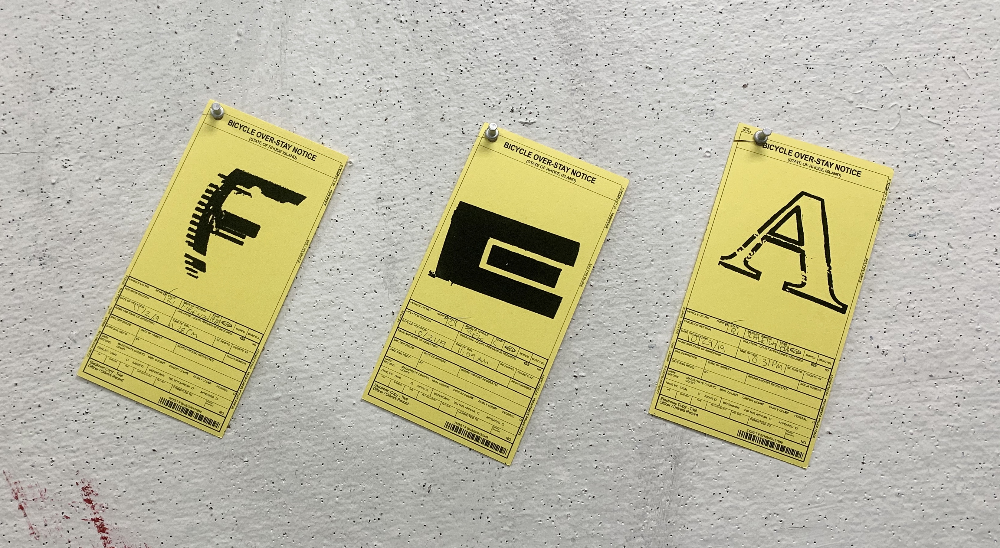
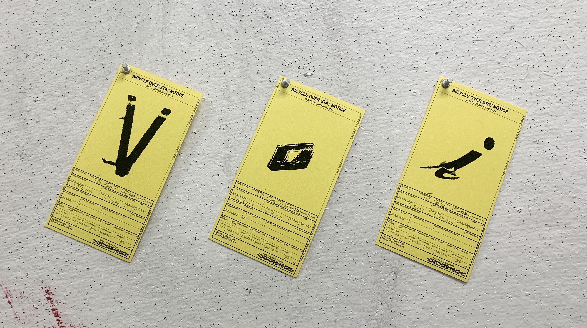
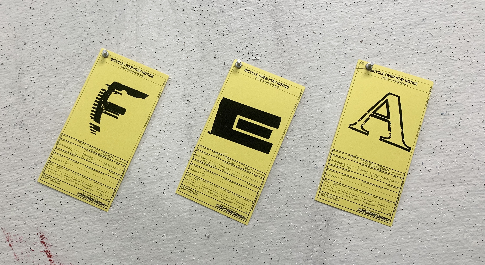
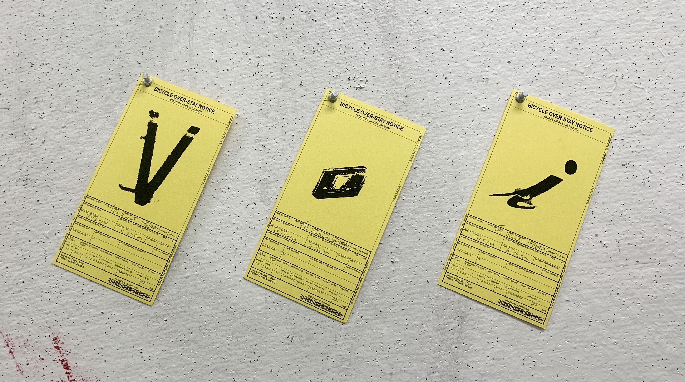

Bicycle Type was designed in response to a Type One prompt calling for an alphabet and specimen cards covering a themed exploration of typography from the field. Providence has a fair amount of neglected bicycles which feature some interesting examples of distressed typography. At the same time, I was disappointed that someone would leave a good bicycle to rot. I decided to fabricate bicycle over-stay notices to display the best examples of the type I encountered and provide legal justice for these leftover machines.
 


